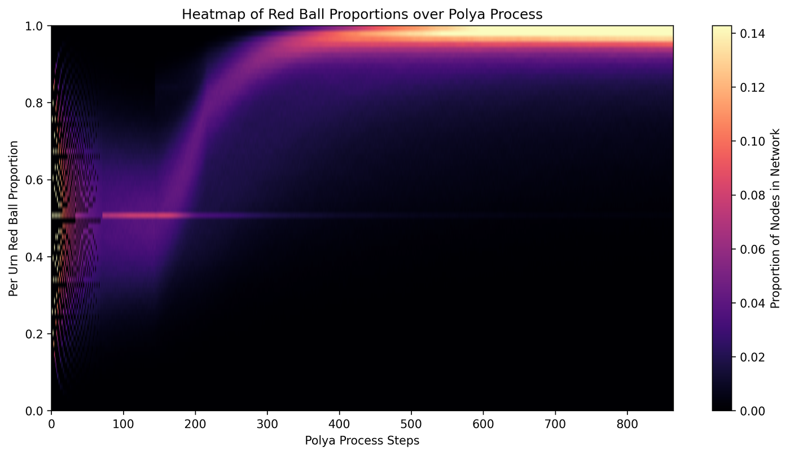
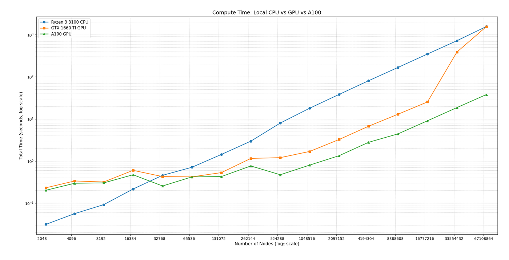

MTHE 493 Capstone - Queen's University - 2026 -
Code on GitHub
The Pólya process running on a grown network with the injection intervention, rendered in Gephi.
Nodes turn red as their urns fill with red balls; the inset histogram shows how the fraction of red
balls is spread across all the urns.
Overview
A Pólya urn is a simple model of contagion: draw a ball, put it back along with more balls of the
same colour, and whatever is common becomes more common. Put an urn at every node of a network and have
each node draw from a "super urn" made of its own urn and its neighbours', and you get a model of how an
idea or an infection spreads through a population.
For my capstone I wanted to run this process on networks big enough to look like real social networks,
and then test strategies for steering it by intervening at the most connected nodes. Most of the work
turned out to be making the simulation fast enough to do that at tens of millions of nodes.
How it works
Everything is vectorized. The urns are one array with a row per node, and the network is a
sparse (CSR) matrix. A Pólya step is a sparse matrix product to build every super urn at once,
one random draw per node, and an add, with no Python loops over nodes. It runs on the GPU through
CuPy and falls back to NumPy/SciPy on the CPU.
Switched networks in one bit per node. In switched-network growth each new node either connects
to every earlier node or to none of them, decided by a Bernoulli trial. That means the whole graph can
be stored as a single bit per node instead of an adjacency matrix. With that representation a
1-billion-node network runs on a desktop CPU with 32 GB of RAM at about 200 seconds per Pólya step.
Batched Barabási–Albert growth. To model social networks, nodes attach preferentially
to already well-connected nodes. Sampling from a list of edge endpoints, where each node appears once
per connection, is the same as sampling by degree, so it can be done in large vectorized batches.
Batches that grow exponentially in size were the fastest.
Interventions. Two strategies target the highest-degree nodes. The first adds new red-biased
nodes wired to them. The second injects balls straight into their urns, which avoids rebuilding the
sparse graph between steps. There is also a variant that ranks nodes by eigenvector centrality,
computed with power iteration.
Results

Each column is one Pólya step, and the colour shows what fraction of nodes have a given proportion
of red balls. Starting from mixed urns, most of the network converges to nearly all red by around step 400.
I benchmarked the full pipeline (growing the network, building the sparse matrix, and running 100
Pólya steps) on my desktop's Ryzen 3 3100 and GTX 1660 Ti, and on an 80 GB A100 in Google Colab:
Nodes
Edges
Ryzen 3 3100
GTX 1660 Ti
A100
2.2 M
13.4 M
38.2 s
3.7 s
1.7 s
17.9 M
107 M
348 s
25.3 s
9.3 s
71.6 M
430 M
1,565 s
1,557 s
37.9 s
The 1660 Ti is about 14× faster than the CPU until the graph no longer fits in its 6 GB of VRAM.
Past that point the GPU spends its time paging through unified memory in system RAM and drops back to
CPU speed. The A100 keeps scaling and finishes the largest run about 41× faster than the CPU.

Total compute time against network size (both axes log scale).
What's next
Splitting work between CPU and GPU, so graphs larger than VRAM stay in system RAM and are streamed to the GPU in blocks.
Storing edges as bits instead of 32-bit integers to cut graph memory further.
Growth rules beyond Bernoulli trials.
Tools
Python, NumPy, SciPy (sparse matrices), CuPy and CUDA, Google Colab, Gephi.